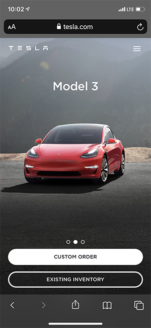
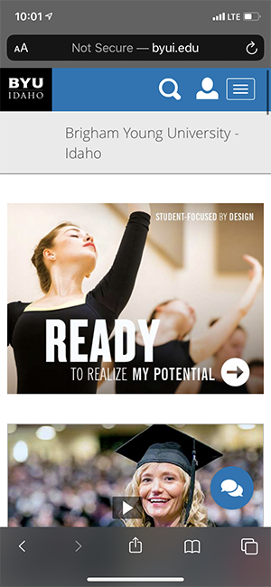
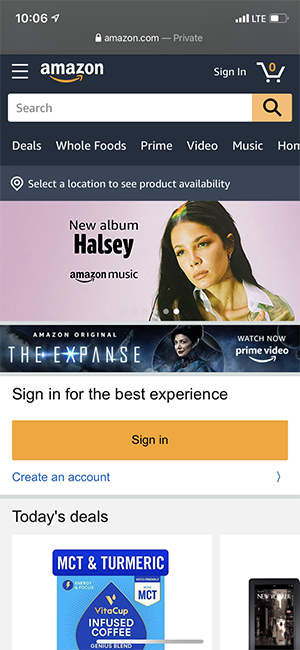

Visual Hierarchy | Tesla
The elements on the page follow the concept of visual hierarchy because the image of the car is the largest element on screen, followed by the action buttons on the bottom, the title of the car, and then the logo and navigation located at the top. The most important object is largest becsue they are trying to promote and sell the car.
Proximity | BYU-Idaho
The icons in the top right corner are an example of proximity because since they are placed together in a cluster in this corner, we assume that they all relate to one another. All these icons are navigational and that is why they are grouped together.
Contrast | Amazon
The contrast of the orange color of the button against the white background makes it stand out and the button is caling users to action, urging them to sign up for Amazon. By using the contrast of this bright color against a plain background, it draws the user's attention immediately once the site is loaded.